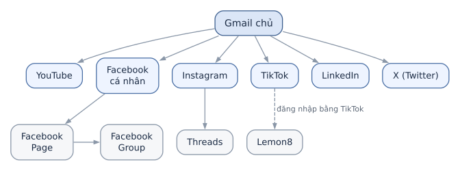
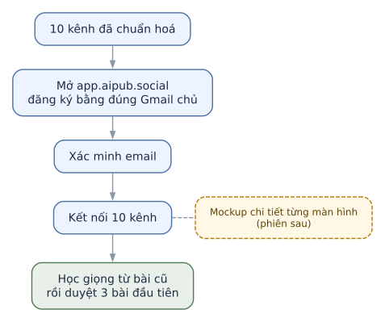

0xdonniechu.github.io Hướng dẫn aipub.social cập nhật 2026-11-23
Chưa có tài khoản mạng xã hội? Dựng đủ 10 kênh trong một buổi
Hướng dẫn dành cho người mới: tạo một Gmail, dựng 10 tài khoản mạng xã hội cùng một bộ nhận diện, rồi mới mở app.aipub.social để kết nối. Làm đúng thứ tự thì không phải sửa lại lần hai.
- 90–120 phút mỗi thương hiệu
- 1 Gmail đứng tên tất cả
- 10 kênh cùng bộ nhận diện
- 2 buổi là xong
Phạm vi trang này: phần tạo tài khoản đã đủ để làm theo. Phần kết nối kênh trong web UI của app.aipub.social sẽ có hướng dẫn từng màn hình riêng — ở đây chỉ tả thứ tự và điều kiện cần.
Trong trang này
Bạn sẽ có gì sau khi làm xong
Mỗi thương hiệu cần đúng ba lớp. Thiếu lớp nào thì vòng lặp đăng bài sẽ kẹt ở lớp đó.
1 · Gmail chủ
Đứng tên toàn bộ: tạo YouTube, nhận email xác minh của 9 kênh còn lại, đăng ký aipub, và sau này mời nhân sự cùng duyệt bài.
2 · Mười tài khoản
Cùng một handle, cùng một logo, cùng một câu giới thiệu. Đây là bộ mặt công khai của thương hiệu.
3 · Một workspace
Tài khoản tại app.aipub.social — nơi máy học giọng của quán, viết bài riêng từng kênh và chờ bạn bấm duyệt.

Một hay hai bộ tài khoản? 2 phút · quyết định trước khi tạo bất cứ thứ gì
Trả lời một câu: bạn có hai chủ thể cần giọng viết khác nhau không? Ví dụ: một bên là thương hiệu cá nhân của bạn, một bên là công ty.

| Tình huống của bạn | Số bộ | Vì sao |
|---|---|---|
| Quán cà phê của bạn, bạn tự duyệt bài | 1 | Một giọng, một tệp khách |
| Vừa có thương hiệu cá nhân (coach, freelancer) vừa có công ty | 2 | Hai giọng, hai tệp khách khác nhau |
| Agency chạy 3 brand cho khách | 3 | Mỗi brand phải tách được để bàn giao hoặc khoá riêng |
| Hai dòng sản phẩm nhưng cùng một câu chuyện thương hiệu | 1 | Tách ra chỉ làm loãng giọng viết |
Ba điều tuyệt đối không làm
- Dùng chung một Gmail cho hai brand — lúc kết nối kênh, cửa sổ đăng nhập sẽ chọn nhầm tài khoản, và khi cần khoá hay bàn giao một brand thì dính cả hai.
- Dùng Gmail cá nhân của bạn làm Gmail chủ — sau này muốn giao việc cho nhân sự sẽ rất khó.
- Tạo hai bộ mà dùng chung một số điện thoại cho cả 20 tài khoản — dễ bị khoá hàng loạt.
Chuẩn bị trước khi bấm đăng ký 15 phút · chuẩn bị một lần, dùng cho cả 10 nền tảng
Vừa tạo tài khoản vừa nghĩ tên là nguyên nhân số một khiến bộ nhận diện lệch nhau. Chuẩn bị sẵn những thứ dưới đây rồi hãy bắt đầu.
| Hạng mục | Quy ước | Ví dụ |
|---|---|---|
| Handle (tên định danh) | Tối đa 20 ký tự, chỉ chữ thường không dấu, số và dấu gạch dưới | tiemcaphenang |
| Tên hiển thị | Có dấu tiếng Việt được, tối đa 30 ký tự, giống nhau ở mọi nơi | Tiệm Cà Phê Nắng |
| Logo / avatar | Vuông 1:1, tối thiểu 1024×1024 px | logo-tiem-nang-1024.png |
| Ảnh bìa | Hai tỉ lệ: ngang 16:9 và bản ngắn cho TikTok, X | cover-16x9.jpg |
| Câu giới thiệu | Tối đa 150 ký tự: một câu định vị, một câu mời liên hệ | Cà phê rang mộc Q.3. Mở 7:00–22:00. Đặt bàn: 09xx… |
| Một link duy nhất | Một URL công khai dán vào mọi hồ sơ | https://tiemnang.vn |
| Số điện thoại | Số thật, nhận được SMS; thêm một số phụ nếu có | — |
| Email khôi phục | Email khác Gmail chủ, loại bạn mở hằng ngày | — |
| Mật khẩu | Lưu trong ứng dụng quản lý mật khẩu, không ghi ra giấy hay file | 1Password, Bitwarden |
Kiểm tra handle trước khi bắt đầu: gõ handle dự kiến vào ô đăng ký của TikTok và Instagram trước — hai nơi có quy tắc chặt nhất. Trống ở hai nơi đó thì gần như chắc chắn trống ở tám nơi còn lại. Nếu đã có người dùng, chọn biến thể ngay từ đầu (thêm .vn, _official, tên quận) rồi dùng đúng biến thể đó cho cả 10 kênh.
Tạo Gmail chủ 5 phút · tài sản duy nhất không làm lại được
Mở accounts.google.com/signup và làm theo thứ tự:
- Chọn “Vì công việc của tôi”. Google sẽ mời tạo tên miền doanh nghiệp — bỏ qua, chọn dùng Gmail miễn phí.
- Đặt tên theo thương hiệu, không theo tên bạn:
tiemcaphenang@gmail.com,tiemcaphenang.vn@gmail.com. - Điền số điện thoại thật và xác minh SMS.
- Bật ngay xác thực hai lớp tại myaccount.google.com/security.
- Lưu mã khôi phục vào ứng dụng quản lý mật khẩu.
- Đặt email khôi phục là email bạn mở hằng ngày.
Vì sao phải làm kỹ: mất Gmail chủ là mất YouTube, mất đường nhận lại 9 kênh còn lại và mất luôn workspace. Đây là tài sản duy nhất trong hướng dẫn này mà không thể “làm lại từ đầu”.
Nếu tên đã bị chiếm: thêm hậu tố có nghĩa — brand.vn, brand.hn, brand.team. Đừng thêm số ngẫu nhiên (brand1987): sau này đọc qua điện thoại rất khó.
Chưa cần email tên miền riêng. Giai đoạn này Gmail miễn phí là đủ; nâng cấp sau không ảnh hưởng gì đến 10 kênh đã tạo.
Tạo 10 tài khoản, đúng thứ tự 45–60 phút · chia làm hai buổi
Thứ tự dưới đây xếp theo phụ thuộc kỹ thuật (cái nào phải có trước) và mức rủi ro bị khoá (cái nào dễ bị chặn thì làm lúc bạn còn kiên nhẫn).

| # | Kênh | Trang đăng ký | Cần có trước |
|---|---|---|---|
| 1 | YouTube | youtube.com/create_channel | Gmail chủ |
| 2 | Facebook cá nhân | facebook.com/reg | Gmail chủ |
| 3 | Facebook Page | facebook.com/pages/create | Hồ sơ Facebook |
| 4 | Facebook Group | facebook.com/groups/create | Hồ sơ Facebook |
| 5 | instagram.com/accounts/emailsignup | Gmail chủ | |
| 6 | Threads | threads.net | |
| 7 | TikTok | tiktok.com/signup | Gmail chủ |
| 8 | Lemon8 | lemon8-app.com (nên đăng nhập trong app) | Tài khoản TikTok |
| 9 | linkedin.com/signup | Gmail chủ | |
| 10 | X (Twitter) | x.com/i/flow/signup | Gmail chủ |
Về bộ 10 kênh: danh sách này dùng Threads, không gồm Zalo OA. Trên bài đăng, kênh Twitter hiển thị chữ “Twitter” với logo X.
Làm từng kênh
YouTube
- Đăng nhập YouTube bằng Gmail chủ, bấm Create a channel.
- Đặt tên kênh đúng tên hiển thị, chọn handle đã chốt ở bước 2.
- Thêm logo và ảnh bìa 16:9.
- Chưa cần tải video, nhưng nên điền mô tả và link website để kênh không bị coi là rỗng.
Facebook: hồ sơ → Page → Group
- Hồ sơ cá nhân. Đăng ký bằng Gmail chủ và dùng tên thật của người vận hành — Facebook yêu cầu tên thật, đặt tên thương hiệu ở đây rất dễ bị khoá. Sau đó vào Cài đặt → Tên người dùng để đặt handle thương hiệu cho đường dẫn hồ sơ.
- Page. Vào Pages → Create new Page, đặt tên thương hiệu, chọn ngành, thêm logo và ảnh bìa. Page không cần tên thật — đây mới là bộ mặt thương hiệu.
- Group. Vào Groups → Create Group, đặt tên và mô tả, chọn chế độ công khai hoặc riêng tư. Mời một người thân vào làm thành viên đầu để Group không bị coi là rỗng.
Thực tế cần biết: hồ sơ Facebook mới tạo thường bị hạn chế vài ngày (không vào được một số Group, không đăng bài ở Group lạ). Vì vậy hãy tạo hồ sơ này càng sớm càng tốt, đừng đợi đến ngày cần đăng bài.
Instagram rồi Threads
- Đăng ký Instagram bằng Gmail chủ, đặt handle thương hiệu.
- Vào Cài đặt → Loại tài khoản, chuyển sang Professional (Business) — miễn phí, mở thêm số liệu.
- Thêm logo, câu giới thiệu và link.
- Mở Threads, chọn Continue with Instagram, dùng đúng tài khoản vừa tạo. Threads lấy luôn handle và avatar; chỉ cần sửa câu giới thiệu nếu muốn khác.
TikTok rồi Lemon8
- Đăng ký TikTok bằng Gmail chủ, đặt handle thương hiệu.
- Nếu có bán hàng, chuyển sang tài khoản Doanh nghiệp.
- Lemon8: đăng nhập bằng TikTok để giữ cùng handle và avatar — nhanh hơn và ít lệch nhận diện hơn là đăng ký bằng email riêng.
LinkedIn và Company Page
- Đăng ký bằng Gmail chủ. LinkedIn bắt buộc tên người thật ở hồ sơ cá nhân, đừng đặt tên thương hiệu ở đây.
- Tạo Company Page tại linkedin.com/company/setup/new — đây là nơi đặt logo, mô tả và website của thương hiệu.
- Đặt đường dẫn công ty trùng handle nếu còn trống.
X (Twitter)
- Đăng ký bằng Gmail chủ, đặt handle thương hiệu. X giới hạn 15 ký tự, nên nếu handle dài hơn thì phải rút gọn ngay từ bước chuẩn bị, đừng rút gọn tại đây rồi lệch các kênh khác.
- Thêm logo, câu giới thiệu và link. X hay chặn đăng ký qua VPN hoặc mạng datacenter — dùng mạng thường.
Nhịp làm: chia hai buổi, tránh bị khoá hàng loạt
Tạo 10 tài khoản liên tiếp trong 20 phút từ một thiết bị là cách nhanh nhất để bị xếp vào nhóm “tài khoản mới hàng loạt”. Chia làm hai buổi:
| Buổi | Thời lượng | Cần xong |
|---|---|---|
| Buổi 1 | 45–60 phút | Gmail chủ → YouTube → Facebook cá nhân → Page → Group |
| Buổi 2 | 45–60 phút | Instagram → Threads → TikTok → Lemon8 → LinkedIn → X → chuẩn hoá nhận diện |
- Xong một tài khoản thì “làm ấm” nó ngay: xác minh email → thêm logo → đăng một bài chào → rồi mới sang tài khoản kế.
- Mỗi bộ tài khoản dùng một profile trình duyệt riêng. Bước kết nối kênh là đăng nhập uỷ quyền: trình duyệt đang đăng nhập tài khoản nào thì nó lấy tài khoản đó. Trộn hai bộ trong một profile là nguồn gốc của lỗi “kết nối nhầm kênh”.
- Đừng đăng nội dung y hệt lên 10 kênh trong ngày đầu. Một bài chào ở hai ba kênh chính là đủ; phần viết riêng từng kênh là việc của aipub.
- Số điện thoại: một số dùng được cho nhiều nền tảng, nhưng TikTok và Instagram có giới hạn số tài khoản trên một số. Bị từ chối thì dùng số thứ hai, đừng thử lại liên tục.
- Nếu bị yêu cầu xác minh danh tính: dừng lại, làm theo hướng dẫn của nền tảng. Đừng tạo tài khoản mới thay thế ngay — rất dễ bị khoá cả cụm.
Lỗi thường gặp
| Hiện tượng | Nguyên nhân thường gặp | Cách xử lý |
|---|---|---|
| Handle đã có người dùng | Chưa kiểm tra trước | Dùng biến thể đã chọn ở bước 2, áp cho tất cả kênh |
| “Email đã được sử dụng” | Gmail chủ từng đăng ký nền tảng đó | Chọn “Quên mật khẩu” để nhận lại, đừng tạo tài khoản thứ hai |
| TikTok từ chối số điện thoại | Số đã dùng cho quá nhiều tài khoản | Dùng số thứ hai, hoặc đăng ký bằng email |
| Hồ sơ Facebook mới không đăng được vào Group | Giới hạn tài khoản mới | Chờ vài ngày, tương tác bình thường trước |
| Threads không tìm thấy tài khoản | Đang đăng nhập nhầm Instagram | Đăng xuất, đăng nhập đúng tài khoản của bộ này |
| Lemon8 không có nút đăng ký trên web | Web chỉ để xem | Cài app, đăng nhập bằng TikTok |
| YouTube không cho đặt handle | Handle quá ngắn hoặc quá dài | Dùng handle 3–30 ký tự |
Chuẩn hoá nhận diện trên cả 10 kênh 15 phút · bước quyết định độ tin cậy
Tạo xong tài khoản chưa phải là xong. Đây là bước quyết định người đọc tin đây là một thương hiệu thật hay một loạt tài khoản rác — và cũng là bước quyết định máy học đúng giọng của bạn.
- Handle trùng khớp ở cả 10 kênh Khác biệt duy nhất được chấp nhận: X giới hạn 15 ký tự.
- Tên hiển thị giống nhau, kể cả dấu tiếng Việt.
- Logo dùng đúng một file, không bị cắt mất chữ.
- Ảnh bìa đúng tỉ lệ từng nền tảng.
- Câu giới thiệu cùng một thông điệp, cùng một lời mời liên hệ.
- Link trỏ về cùng một địa chỉ.
- Email xác minh đã bấm ở cả 10 kênh Kiểm tra hộp thư Gmail chủ, kể cả mục Spam.
- Một bài chào đã đăng trên mỗi kênh.
Vì sao bắt buộc: aipub đọc những bài đang có trên kênh của bạn để dựng thẻ hồ sơ giọng thương hiệu. Kênh rỗng, kênh lệch tên, kênh chưa xác minh email thì máy học sai giọng — và bài nháp đầu tiên sẽ lệch ngay từ câu mở.
Bàn giao sang app.aipub.social 10 phút · chỉ làm khi bước 5 đã tick đủ

- Mở app.aipub.social.
- Đăng ký bằng đúng Gmail chủ đã dùng cho 10 kênh — không dùng Gmail khác, không dùng email công ty.
- Xác minh email trong hộp thư Gmail chủ.
- Vào màn Kết nối kênh, kết nối 10 kênh vừa tạo.
- Chọn gói phù hợp với số kênh bạn cần đăng.
Vì sao phải cùng Gmail: workspace gắn với email đăng ký; đổi về sau là thao tác thủ công và dễ mất lịch sử giọng đã học. Khi mời nhân sự cùng duyệt bài, quyền cũng cấp theo workspace, và Gmail chủ là tài khoản sở hữu. Email xác minh của 10 kênh cũng về đó, nên khi kênh bị cảnh báo bạn biết ngay.
Chuẩn bị để dán khi kết nối: danh sách 10 đường dẫn hồ sơ (bảng ở phụ lục A). Dán từ file, đừng gõ lại — sai một ký tự là kết nối thất bại.
Nếu cửa sổ đăng nhập hỏi “Choose an account”: chọn đúng tài khoản của bộ này. Nếu trình duyệt đang đăng nhập tài khoản cá nhân của bạn, hãy đăng xuất hoặc chuyển sang profile riêng trước khi bấm kết nối.
Phần này sẽ có hướng dẫn từng màn hình (nút nào, bấm ở đâu, thấy gì) trong bản cập nhật kế tiếp. Trang hiện tại chỉ bảo đảm bạn vào đúng thứ tự và đúng tài khoản.
Nghiệm thu: khi nào là xong
| # | Điều kiện | Đạt |
|---|---|---|
| 1 | Có Gmail chủ, đã bật xác thực hai lớp, mã khôi phục đã lưu | ☐ |
| 2 | Đủ 10 tài khoản, email xác minh đã bấm ở cả 10 | ☐ |
| 3 | Handle giống nhau 10/10 (trừ X nếu bị giới hạn ký tự) | ☐ |
| 4 | Cùng logo, cùng câu giới thiệu, cùng link trên 10/10 | ☐ |
| 5 | Có ít nhất một bài chào ở ba kênh chính: Facebook Page, TikTok, Instagram | ☐ |
| 6 | Mỗi bộ tài khoản có profile trình duyệt riêng | ☐ |
| 7 | Đã đăng ký app.aipub.social bằng đúng Gmail chủ | ☐ |
| 8 | Đã kết nối đủ 10 kênh trong workspace | ☐ |
| 9 | Đã duyệt thành công 3 bài đầu tiên | ☐ |
Làm hai bộ thì lặp lại toàn bộ bảng này lần hai, với Gmail thứ hai và profile trình duyệt thứ hai.
Phụ lục
A · Bảng theo dõi 10 kênh
Điền khi làm, rồi dán vào aipub ở bước 6.
| # | Kênh | Handle | Đường dẫn hồ sơ | Xác minh | Logo | Giới thiệu | Bài chào | 2 lớp |
|---|---|---|---|---|---|---|---|---|
| 1 | Facebook cá nhân | ☐ | ☐ | ☐ | ☐ | ☐ | ||
| 2 | Facebook Page | ☐ | ☐ | ☐ | ☐ | ☐ | ||
| 3 | Facebook Group | ☐ | ☐ | ☐ | ☐ | ☐ | ||
| 4 | ☐ | ☐ | ☐ | ☐ | ☐ | |||
| 5 | Threads | ☐ | ☐ | ☐ | ☐ | ☐ | ||
| 6 | TikTok | ☐ | ☐ | ☐ | ☐ | ☐ | ||
| 7 | Lemon8 | ☐ | ☐ | ☐ | ☐ | ☐ | ||
| 8 | YouTube | ☐ | ☐ | ☐ | ☐ | ☐ | ||
| 9 | ☐ | ☐ | ☐ | ☐ | ☐ | |||
| 10 | X (Twitter) | ☐ | ☐ | ☐ | ☐ | ☐ |
B · Nếu bạn đã có sẵn vài tài khoản
Không cần xoá và làm lại. Làm theo thứ tự:
- Kiểm kê: liệt kê tài khoản đang có và Gmail đang dùng cho từng cái.
- Giữ lại tài khoản có người theo dõi thật và handle gần với handle chuẩn.
- Đổi tên và đường dẫn các tài khoản giữ lại về đúng handle chuẩn.
- Chỉ tạo mới những kênh còn thiếu.
- Nếu tài khoản cũ đăng ký bằng Gmail cá nhân: thêm Gmail chủ làm email phụ hoặc email khôi phục, thay vì tạo tài khoản mới từ đầu.
Hỏi nhanh
Có nhất thiết phải đủ 10 kênh mới dùng được không?
Không. Bạn có thể bắt đầu với 3 kênh chính rồi mở rộng. Nhưng nếu mục tiêu là chạy đủ 10 kênh, hãy làm trọn ngay từ đầu để bộ nhận diện không lệch về sau.
Có được dùng cùng một logo cho cả 10 kênh không?
Nên dùng đúng một logo. Chỉ thay đổi ảnh bìa theo tỉ lệ từng nền tảng.
Tên thương hiệu có dấu tiếng Việt ở tên hiển thị có sao không?
Không sao ở tên hiển thị. Nhưng handle phải không dấu.
Làm hai bộ thì có phải dùng hai số điện thoại?
Không bắt buộc, nhưng nên có số thứ hai nếu bạn tạo nhiều tài khoản trong thời gian ngắn.
Một tài khoản bị khoá thì mất gì?
Mất kênh đó, và aipub sẽ báo lỗi kết nối ở kênh tương ứng. Gmail chủ và các kênh còn lại không bị ảnh hưởng — đây chính là lý do phải tách bộ theo chủ thể.
Có cần mua tên miền riêng trước không?
Không. Một URL miễn phí (trang giới thiệu, link menu, hoặc trang aipub) là đủ cho bước này.
Vì sao đăng nhập bằng TikTok cho Lemon8 mà không đăng ký riêng?
Để giữ cùng handle và cùng logo, tránh phải sửa hai nơi. Nếu sau này Lemon8 tách rời tài khoản, bạn vẫn có email chủ để nhận lại.
Nguồn & cập nhật
- Cập nhật lần cuối: 2026-11-23. Đường dẫn đăng ký đã kiểm tra còn hoạt động trong ngày; đây không phải xác nhận từng ô trong biểu mẫu.
- Bộ 10 kênh dùng Threads thay cho Zalo OA; luật “không đánh tráo kênh khác tệp người đọc” vẫn giữ: chữ “Twitter”, logo X.
- Luồng sản phẩm liên quan: aipub.social — hành trình từ ý tưởng đến bài đã duyệt.
- Trang này là bản công khai dành cho người dùng; không chứa thông tin nội bộ, cấu hình hay chi phí vận hành.